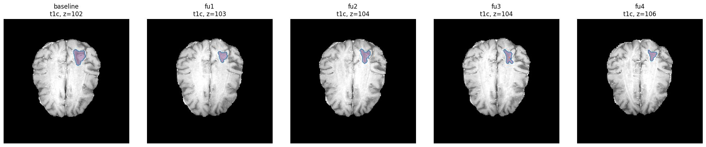

THE PROBLEM
Serial MRI review can be subjective.
THE SHIFT
3D volume makes change measurable.
HOW IT WORKS
One clear path from scan to insight
IMPLEMENTEDscan analysis
PROTOTYPEserial tracking
01
MRI scans
DICOM
02
Standardize
NIfTI + geometry
03
3D segmentation
nnU-Net
04
Volume per scan
cm3
TRACK
05
Δ
Track over time
Baseline -> follow-ups
SERIAL MRI EVIDENCE
One tumor.
Five timepoints.
Segmentation overlays show the same lesion across follow-up scans.

BASELINEFU1FU2FU3FU4